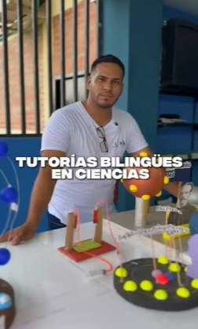
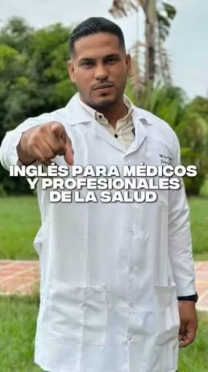

Meet Mr. Wright

I'm Mishael Wright, an English teacher and science educator. This space is designed to help you practise, build confidence and understand your progress.
Teaching interests

Bilingual science education
English for health professionalsWright Academic is an independent educational project. It does not represent any school or examination board. Classroom participation is not conditional on purchasing services.